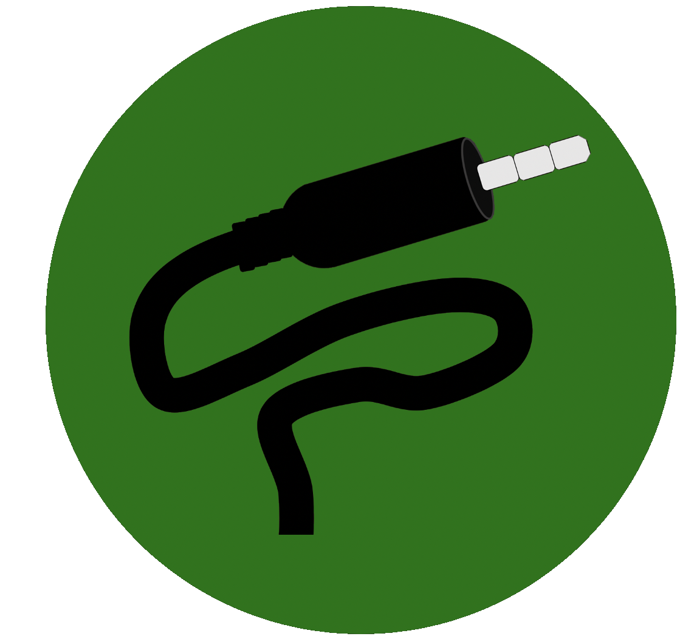
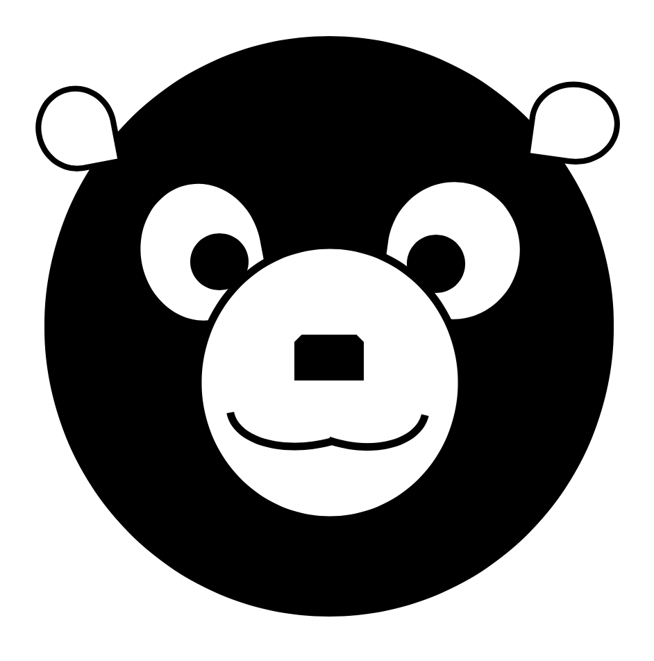
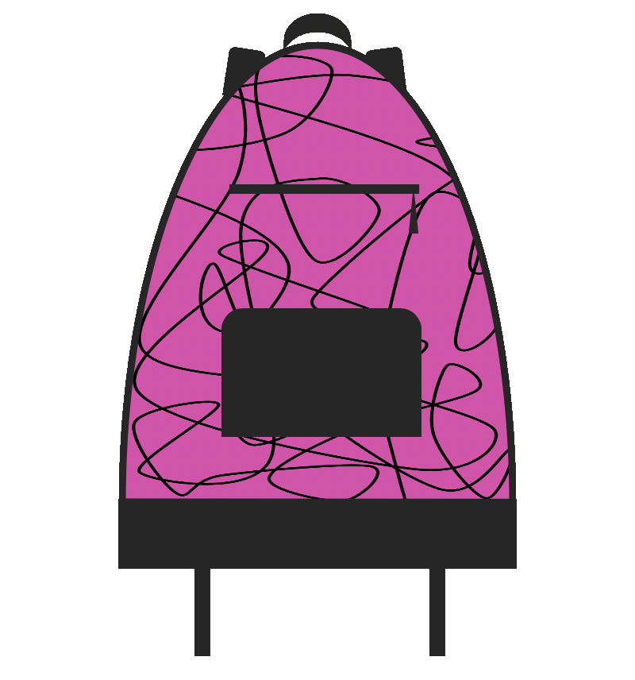

x
AUX
A democratic real-time song queuing device-agnostic platform. Combine subscriptions from various music streaming platforms to maximize song diversity!
x
Rho
A novel fixed-volume buoyancy control device for scuba divers looking to reduce gear bulkiness.
x
So Much Simplicity (SMS)
An Android texting app designed for individuals with low vision, empowering them with the ability to customize the visual and auditory preferences, as they see fit.
x
The Other Half
An Android app to enhance couples' productivity, offering them a space to collaboratively construct a "Bucket List" as well as a realistic planner.
x
x
Teralytic
An Alexa skill that displays Teralytic's unique NPK (and other) sensor capabilities. With this skill, farmers can query their Alexa devices about their soil's health, before even stepping out of their homes!